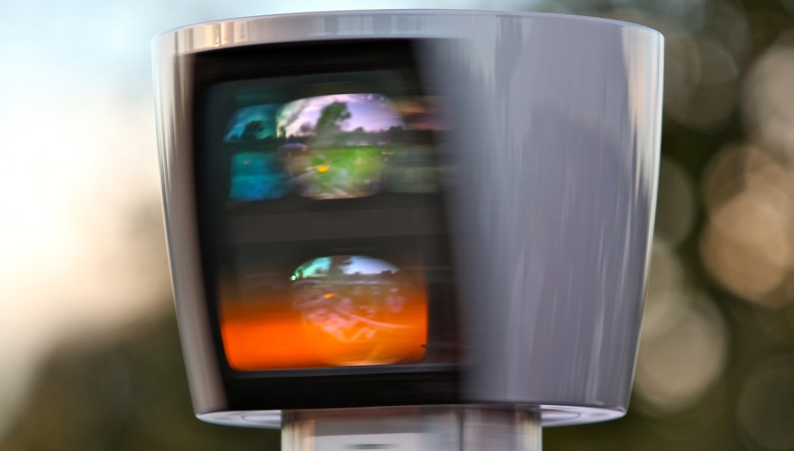

| Главная |
| Основные виды сенсоров: |
|---|
| Уровни автономности |
| Наше решение |
Лидар
Лидар сканирует всю местность вокруг автомобиля при помощи лазера. Вокруг лазера вращается зеркало которое обеспечивает видимость на 360°, приемник получает отраженный луч приемник и через него поступает информация.
И из этого можно сделать несколько выводов:
Лазер позволяет с большой точностью определить расстояние;
Этот датчик может показать автомобилю что вокруг него происходит.
Хоть лазер очень точно передает информацию, но лазерный луч проходит не через любую среду. Также при тряске зеркало может повернуться на неправильный угол, что приведёт к неточности информация. А если тряска будет очень сильной, то можно и весь лидар повредить. Также лидары очень ограничены по высоте. Из-за ограниченого угла обзора зеркала.
Из этого следуют минусы:
Датчики очень хрупкие;
Ухудшается точность при неблагоприятной погоде, например дождь, снег, буран и тому подобное;
- Обороты зеркальца ограничены по скорости из-за этого один и тот же участок дороги будет сканирован всего 2-3 раза;
Снижается точность при тряске;
Ограничены по высоте;
Требование мощных вычислительных средств.